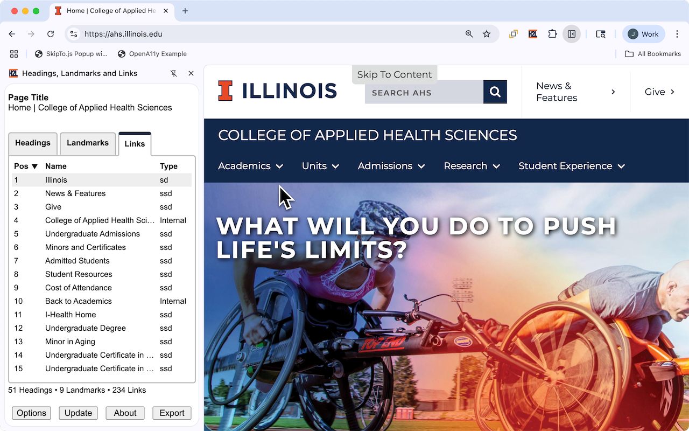

Options Dialog Box

Highlight
| Option | Description |
|---|---|
| Highlight follows focus |
|
| Border Size |
Sets the width of the border used to highlight items on the web pages. The following sizes are available:
|
| Border Style |
The style used for the border. The following styles are available:
|
Export Information
| Option | Description |
|---|---|
| Headings | Include in the CSV file information about headings on the page. |
| Landmarks | Include in the CSV file information about landmarks on the page. |
| Links | Include in the CSV file information about links on the page. |
Export Filename Options
| Option | Description |
|---|---|
| File Name |
|
| Index |
|
Other Options
| Option | Description |
|---|---|
| Prompt for export options | Enables prompting of the "Export Options" dialog box when activating the "Export" button. |